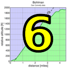

|  |  |

|
| LouLou Kelly, with aerodynamics better even than Cavendish at his best, outsprints her father David to crush her PR on OLH (Brian Ward) |
Low-Key returned to OLH for the first time in 5 years and it was a spectacular success! We hit our RSVP limit of 150 on Monday, a Low-Key record for our present system, a testament to the popularity of this iconic Bay area climb. Indeed, most people recognizer an OLH time has special significance... there's that extra desire to get every extra seconds out of your legs, lungs, and bike.
Among the men, it was a super-packed group 1 as the top 3 all broke that special 16-minute barrier on the climb, fourth place David Collet falling just short with a still fantastic 16:03 on our traditional bridge-to-stop sign timing. Todd Markelz, tied for 2nd on the Strava Bridge-to-Mailboxes segment, came oh-so-close to Chris Phipps' Low-Key record 15:35 from 2009.
On the women's side, Janet Gardner became only the second woman in Low-Key history to break the 20-minute barrier, finishing in a fantastic 19:48. Elizabeth Hamel and Katie Quinn completed the top 3.
in the running competition, Gary Gellin took a solid 1:27 off his time from 1995 to break his own Low-Key record. Gary, Mark Anderson and Dan Connelly were the three riders from that first season climb to finish today. Special note to Twain Mein who, after riding the hill in an excellent 19:10, ran it in 29:17.
For the hybrid-electrics, it was Bill Bushnell blitzing the route in his usual fashion, getting the 2nd best Low-Key OLH time in history. Bill was probably delayed by the Alto Velo B ride, however, which was on climb for the volunteer groups which rode ahead of the main groups.
A few riders this week do not appear on the results because they are not listed as checked off with their groups at the Park & Ride.
KOM special mention qualifiers indicated with orange background.
| pl | # | name | team | cat | time | mph | fph | score |
|---|---|---|---|---|---|---|---|---|
| 1 | 8 | Janet Gardner | Sr's & Mr's of No Mercy | 45+ | 19:48 | 10.15 | 3909 | 122.74 |
| 2 | 604 | Elizabeth Hamel | Stanford & Sons | 3 | 20:17 | 9.91 | 3816 | 120.02 |
| 3 | 127 | Katie Quinn | MIT-West | 25+ | 20:22 | 9.87 | 3800 | 119.56 |
| 4 | 117 | Lisa Penzel | Low-Key | 50+ | 20:41 | 9.72 | 3742 | 117.86 |
| 5 | 43 | Sindy Cho | Low-Key | Just Make It To The Top | 21:03 | 9.55 | 3677 | 115.95 |
| 6 | 122 | Jennie Phillips | Sr's & Mr's of No Mercy | 50+ | 21:29 | 9.36 | 3603 | 113.78 |
| 7 | 270 | Jill Stone | LGBRC | 4 | 21:41 | 9.27 | 3570 | 112.80 |
| 8 | 22 | Mary Ellen Allen | Sr's & Mr's of No Mercy | 50+++ | 22:39 | 8.87 | 3417 | 108.33 |
| 9 | 49 | Christina Davis | LGBRC | 4 | 22:44 | 8.84 | 3405 | 107.96 |
| 10 | 51 | Bonnie Denoyer | LGBRC | 45+ | 22:59 | 8.75 | 3368 | 106.87 |
| 11 | 719 | Holly Harris | Sr's & Mr's of No Mercy | 50+ | 25:09 | 7.99 | 3078 | 98.29 |
| 12 | 61 | Mel Dutkiewicz | Diablo | 50+ | 25:21 | 7.93 | 3053 | 97.57 |
| 13 | 411 | Kitty Metcalfe | KKMetcalfe | 55+ | 25:41 | 7.83 | 3014 | 96.39 |
| 14 | 37 | Kathleen Camp | LGBRC | 30+ | 26:20 | 7.63 | 2939 | 94.18 |
| 15 | 714 | Laura Egley | Clagnuts | 50+ | 30:18 | 6.63 | 2554 | 82.67 |
| 16 | 730 | Stephanie Majoulet | LGRC | Just Make It To The Top | 31:02 | 6.48 | 2494 | 80.86 |
| 17 | 80 | Christine Holmes | Low-Key | 50+ | 32:33 | 6.18 | 2378 | 77.35 |
| 18 | 422 | Mary Wholey | Just Make It To The Top | 37:13 | 5.40 | 2080 | 68.30 | |
| 19 | 723 | Loulou Kelly | Team Kelly | 8 Year Old Girls Rock! | 41:46 | 4.81 | 1853 | 61.36 |
100 point reference time for division Women = 24:41
| pl | # | name | team | cat | time | mph | fph | score |
|---|---|---|---|---|---|---|---|---|
| 1 | 731 | Todd Markelz | 4 35+ | 15:41 | 12.82 | 4935 | 128.04 | |
| 2 | 603 | Blaise Hamel | Stanford & Sons | 3 | 15:47 | 12.73 | 4904 | 127.29 |
| 3 | 713 | Hanns Detlefsen | Sr's & Mr's of No Mercy | 40+ | 15:51 | 12.68 | 4883 | 126.79 |
| 4 | 46 | David Collet | Stanford & Sons | 45+ | 16:03 | 12.52 | 4822 | 125.32 |
| 5 | 410 | Kevin Metcalfe | KKMetcalfe | 1 | 16:13 | 12.39 | 4773 | 124.12 |
| 6 | 62 | Chris Evans | Stanford & Sons | 35+ | 16:18 | 12.33 | 4748 | 123.54 |
| 7 | 228 | Carl Nielson | Sr's & Mr's of No Mercy | 55+ | 16:30 | 12.18 | 4691 | 122.14 |
| 8 | 90 | Bill Laddish | Team CVC | 45's | 16:42 | 12.04 | 4635 | 120.78 |
| 9 | 311 | Morgan Raines | Bike Trip | 40+ | 16:46 | 11.99 | 4616 | 120.34 |
| 10 | 149 | Joseph Sullivan | San Jose Bike Club | 35+ | 16:53 | 11.91 | 4584 | 119.57 |
| 11 | 1 | Daniel Connelly | Low-Key | 3 | 17:06 | 11.75 | 4526 | 118.16 |
| 12 | 138 | Kirk Scheibelhut | Sparklemotion | Runner With A Bike | 17:07 | 11.74 | 4522 | 118.05 |
| 13 | 108 | Shahram Moatazedi | LGBRC | 40+ | 17:09 | 11.72 | 4513 | 117.84 |
| 14 | 227 | Rob Nast | Plus: | 50+ | 17:21 | 11.59 | 4461 | 116.58 |
| 15 | 742 | Kieran Sherlock | IdentityMind | 45+ | 17:32 | 11.46 | 4414 | 115.44 |
| 16 | 70 | Lyndsey Furtado | Team CVC | 3 | 17:40 | 11.38 | 4381 | 114.63 |
| 17 | 71 | Scott Gammon | Legendary | 6 | 17:49 | 11.28 | 4344 | 113.74 |
| 17 | 39 | Paul Castonguay | Low-Key | 45+ | 17:49 | 11.28 | 4344 | 113.74 |
| 19 | 211 | Tom Dillon | Pen Velo/Pomodoro | 45+ | 17:50 | 11.27 | 4340 | 113.64 |
| 20 | 232 | Alex Poloziouk | Kovarus | 40+ | 17:57 | 11.20 | 4312 | 112.95 |
| 21 | 91 | Stephen Lamm | 40+ | 18:03 | 11.14 | 4288 | 112.37 | |
| 22 | 47 | Andy Crews | Diablo | 45+ | 18:06 | 11.10 | 4276 | 112.08 |
| 23 | 709 | Harlan Chapman | 55+ | 18:17 | 10.99 | 4233 | 111.04 | |
| 24 | 78 | Rich Hill | LGBRC | 50+ | 18:40 | 10.77 | 4146 | 108.92 |
| 25 | 204 | Dash Bodington | Stanford Cycling | Erpillar | 18:43 | 10.74 | 4135 | 108.65 |
| 26 | 16 | Joe Fant | LGBRC | 55+ | 18:45 | 10.72 | 4128 | 108.47 |
| 27 | 66 | Klaus Fleischmann | Pen Velo/Pomodoro | 45+ | 18:47 | 10.70 | 4121 | 108.29 |
| 28 | 147 | Daryl Spano | San Jose Bike Club | 45+ | 18:51 | 10.66 | 4106 | 107.93 |
| 29 | 142 | Brian Schuster | Squadra SF | 2 | 18:58 | 10.60 | 4081 | 107.32 |
| 30 | 734 | Twain Mein | Team Sheeper | 45+ | 19:10 | 10.49 | 4038 | 106.28 |
| 31 | 97 | Doug MacPherson | Pen Velo/Pomodoro | 40+ | 19:13 | 10.46 | 4028 | 106.02 |
| 32 | 28 | Jeff Baxter | LGBRC | 45+ | 19:14 | 10.45 | 4024 | 105.94 |
| 33 | 743 | Mark Slavonia | Pen Velo/Pomodoro | 45+ | 19:17 | 10.42 | 4014 | 105.68 |
| 34 | 150 | Andy Sutterfield | San Jose State University | 25+ | 19:25 | 10.35 | 3986 | 105.01 |
| 35 | 57 | Sandor Dornbush | Sandor Dornbush | 35+ | 19:29 | 10.32 | 3973 | 104.67 |
| 36 | 119 | Jim Perreira | San Jose Bike Club | 45+ | 19:34 | 10.27 | 3956 | 104.26 |
| 37 | 15 | Kevin Comerford | Hell Bent | 35+ | 19:39 | 10.23 | 3939 | 103.85 |
| 38 | 18 | Giles Douglas | 3 | 19:47 | 10.16 | 3912 | 103.20 | |
| 38 | 704 | Matthew Brill | 35+ | 19:47 | 10.16 | 3912 | 103.20 | |
| 40 | 240 | Pritpal Singh | For Mark | 45+ | 19:52 | 10.12 | 3896 | 102.80P |
| 41 | 21 | Tim Aiken | Airgas-Safeway | Retired | 20:03 | 10.02 | 3860 | 101.92 |
| 42 | 143 | Jeremy Scott | LGBRC | 45+ | 20:04 | 10.02 | 3857 | 101.84 |
| 42 | 226 | Val Minaev | LGBRC | 35+ | 20:04 | 10.02 | 3857 | 101.84 |
| 44 | 65 | Andrew Fitzhugh | Stanford Cycling | 50+ | 20:06 | 10.00 | 3851 | 101.69 |
| 45 | 608 | Hal Rooney | LGBRC | 55+ Cat 3/Master | 20:13 | 9.94 | 3829 | 101.14 |
| 46 | 107 | Chris Mickelsen | Pen Velo/Pomodoro | 55+ | 20:16 | 9.92 | 3819 | 100.91 |
| 47 | 132 | Caleb Richardson | Team CVC | 30+ | 20:20 | 9.89 | 3807 | 100.60 |
| 48 | 32 | Geoffrey Bower | Dash | 30+ | 20:24 | 9.85 | 3794 | 100.30M |
| 49 | 20 | Bruno Acklin | Clagnuts | 55+ | 20:29 | 9.81 | 3779 | 99.92 |
| 50 | 83 | Steve Johnson | LGBRC | 50+ | 20:30 | 9.80 | 3776 | 99.84P |
| 51 | 69 | Brad Fox | LGBRC | 30+ | 20:46 | 9.68 | 3727 | 98.65 |
| 52 | 88 | Scott Krahn | LGBRC | 30+ | 20:48 | 9.66 | 3721 | 98.50 |
| 52 | 718 | Chauncey Graetzel | LGBRC | 35+ | 20:48 | 9.66 | 3721 | 98.50 |
| 54 | 239 | Liam Sherlock | IdentityMind | Junior | 20:53 | 9.62 | 3706 | 98.14 |
| 55 | 157 | Martin Wegenstein | LGBRC | 65+ | 20:56 | 9.60 | 3697 | 97.92 |
| 56 | 60 | Marek Dutkiewicz | Diablo | 50+ | 21:10 | 9.50 | 3657 | 96.92 |
| 57 | 701 | Mark Anderson | pain cave addicts | Unworthy Cat3 | 21:14 | 9.47 | 3645 | 96.64 |
| 58 | 131 | Doug Reynolds | NightRiders | 60+ | 21:23 | 9.40 | 3620 | 96.01 |
| 59 | 160 | Jim Williams | San Jose Bike Club | 65+ | 21:30 | 9.35 | 3600 | 95.52 |
| 60 | 271 | Robert Doudell | LGBRC | 45+ | 21:39 | 9.28 | 3575 | 94.91 |
| 61 | 744 | Marco Soldano | Quadzilla Racing | 45+ OLH=21:12 | 21:41 | 9.27 | 3570 | 94.77 |
| 62 | 213 | Rick Ferrell | Team Spokesman | 55+ | 21:43 | 9.26 | 3564 | 94.64 |
| 63 | 64 | Brian Fitzgerald | LGBRC | 50+ | 21:48 | 9.22 | 3550 | 94.30 |
| 64 | 35 | Scott Byer | 45+ | 21:53 | 9.19 | 3537 | 93.97 | |
| 65 | 125 | Thomas Preisler | LGBRC | 60+ | 22:13 | 9.05 | 3484 | 92.66 |
| 66 | 402 | Dan Brehmer | San Jose Bike Club | 50+ | 22:15 | 9.03 | 3479 | 92.53 |
| 67 | 201 | Nigel Allen | Oso | 40+ | 22:29 | 8.94 | 3443 | 91.64 |
| 68 | 87 | Larry Klein | Grumpy Old Men (GOM) | 55+ | 22:30 | 8.93 | 3440 | 91.57 |
| 69 | 736 | Roupen Nahabedian | Pen Velo/Pomodoro | 45+ Cat 4 | 22:34 | 8.91 | 3430 | 91.32 |
| 70 | 250 | Ye Zhang | Team Cycling Panda | Just Make It To The Top | 22:36 | 8.89 | 3425 | 91.20 |
| 71 | 707 | Pat Callahan | Quadzilla Racing | 45+ | 22:41 | 8.86 | 3412 | 90.88 |
| 72 | 302 | Fred Egley | Clagnuts | 50+ | 22:42 | 8.85 | 3410 | 90.82 |
| 73 | 133 | Cory Roay | Pen Velo/Pomodoro | 55+ | 22:45 | 8.84 | 3402 | 90.64 |
| 74 | 159 | Carl Werner | LGBRC | 50+ | 22:46 | 8.83 | 3400 | 90.58 |
| 75 | 739 | Broder Schmidt | Stanford Cycling | 30+ | 22:48 | 8.82 | 3395 | 90.45 |
| 76 | 85 | Rupesh Kapoor | Slightly Old | 23:00 | 8.74 | 3365 | 89.72 | |
| 77 | 740 | Karshan Sharma | Just Make It To The Top | 23:08 | 8.69 | 3346 | 89.24 | |
| 78 | 114 | Dan Pankratz | LGBRC | 40+ | 23:32 | 8.54 | 3289 | 87.83 |
| 79 | 52 | Gilles Denoyer | Finisar | 45+ | 23:44 | 8.47 | 3261 | 87.14 |
| 80 | 154 | Adam Tow | Grumpy Old Men (GOM) | 40+ | 24:17 | 8.28 | 3187 | 85.31 |
| 81 | 247 | Brian Ward | Low-Key | 40+ | 24:22 | 8.25 | 3176 | 85.04 |
| 82 | 146 | Kevin Smith | LGBRC | 55+ | 24:38 | 8.16 | 3142 | 84.18 |
| 83 | 705 | Junjie Bu | Team Cycling Panda | 35+ | 25:00 | 8.04 | 3096 | 83.04 |
| 84 | 59 | Frank Drobot | Team Djament | 65+ | 25:10 | 7.99 | 3075 | 82.52 |
| 85 | 728 | Joseph Longo | Club Longo | 60+ | 25:26 | 7.90 | 3043 | 81.72 |
| 86 | 706 | Enzo Busseti | Stanford Cycling | 4 | 25:41 | 7.83 | 3014 | 80.98 |
| 87 | 68 | Stephen Fong | Team 0 | 0 | 25:50 | 7.78 | 2996 | 80.54 |
| 88 | 727 | Wayland Li | DH racer | Just Make It To The Top | 25:53 | 7.77 | 2990 | 80.40 |
| 89 | 726 | Henrik Bo Larsen | LGBRC | Just Make It To The Top | 26:31 | 7.58 | 2919 | 78.62 |
| 90 | 23 | Richard Allen | Sr's & Mr's of No Mercy | 55+ | 27:02 | 7.44 | 2863 | 77.22 |
| 91 | 725 | ROBERT LENNIE | Club Longo | 6 | 27:10 | 7.40 | 2849 | 76.87 |
| 92 | 400 | Gabriel Beddingfield | Nest | 40+ | 29:01 | 6.93 | 2667 | 72.30 |
| 93 | 741 | Ke Shen | Team Cycling Panda | PR On OLH: 32:00 | 29:28 | 6.82 | 2627 | 71.28 |
| 94 | 721 | Anand Hattiangadi | at least i look cool | Just Make It To The Top | 29:43 | 6.76 | 2605 | 70.72 |
| 95 | 748 | Yutong Zhao | Team Cycling Panda | 45+ | 30:10 | 6.66 | 2566 | 69.74 |
| 96 | 162 | Harvey Wolfson | Diablo | 65+ | 31:43 | 6.34 | 2440 | 66.57 |
| 97 | 218 | David Kelly | Team Kelly | Out Of Shape Dads | 41:47 | 4.81 | 1852 | 51.53 |
100 point reference time for division Men = 20:27
| pl | # | name | team | cat | time | mph | fph | score |
|---|---|---|---|---|---|---|---|---|
| 1 | 55 | Emma Dixon | 35+ | 22:24 | 8.97 | 3455 | 100.70 | |
| 56 | Jonathan Dixon | 35+ | ||||||
| 2 | 101 | Paul McKenzie | Sr's & Mr's of No Mercy | 60+ | 20:58 | 9.59 | 3692 | 97.78 |
| 44 | Paul Chuck | Sr's & Mr's of No Mercy | 60+ | |||||
| 3 | 151 | Ellen Taylor | Tandem Team Taylor | Fair Weather Warriors | 24:01 | 8.37 | 3223 | 94.39 |
| 152 | Stuart Taylor | Tandem Team Taylor | 40+ | |||||
| 4 | 12 | Will Von Kaenel | LGBRC | 55+ | 26:08 | 7.69 | 2962 | 87.27 |
| 13 | Lynn Von Kaenel | LGBRC | Stoker |
| pl | # | name | team | cat | time | mph | fph | score |
|---|---|---|---|---|---|---|---|---|
| 1 | 6 | Bill Bushnell | Low-Key | Recumbent | 11:41 | 17.20 | 6625 | 101.65 |
100 point reference time for division Hybrid Electric = 11:53
| pl | # | name | team | cat | time | mph | fph | score |
|---|---|---|---|---|---|---|---|---|
| 1 | 716 | Gary Gellin | Sr's & Mr's of No Mercy | Runner | 23:02 | 8.73 | 3360 | 111.99 |
100 point reference time for division Male Runner = 26:01
| pl | team | score | riders |
|---|---|---|---|
| 1 | Stanford & Sons | 376.14 | Blaise Hamel, David Collet, Chris Evans, Elizabeth Hamel |
| 2 | Sr's & Mr's of No Mercy | 371.67 | Hanns Detlefsen, Carl Nielson, Janet Gardner, Paul McKenzie, Paul Chuck, Jennie Phillips, Mary Ellen Allen, Gary Gellin, Holly Harris, Richard Allen |
| 3 | Low-Key | 351.97 | Bill Bushnell, Daniel Connelly, Paul Castonguay, Lisa Penzel, Sindy Cho, Brian Ward, Christine Holmes |
| 4 | 343.61 | Todd Markelz, Stephen Lamm, Giles Douglas, Scott Byer, Emma Dixon, Jonathan Dixon, Rupesh Kapoor, Karshan Sharma | |
| 5 | LGBRC | 339.56 | Shahram Moatazedi, Rich Hill, Joe Fant, Jeff Baxter, Jeremy Scott, Val Minaev, Hal Rooney, Steve Johnson, Brad Fox, Scott Krahn, Chauncey Graetzel, Martin Wegenstein, Robert Doudell, Jill Stone, Brian Fitzgerald, Thomas Preisler, Christina Davis, Carl Werner, Bonnie Denoyer, Dan Pankratz, Kevin Smith, Will Von Kaenel, Lynn Von Kaenel, Kathleen Camp, Henrik Bo Larsen |
| 6 | Team CVC | 336.02 | Bill Laddish, Lyndsey Furtado, Caleb Richardson |
| 7 | San Jose Bike Club | 331.76 | Joseph Sullivan, Daryl Spano, Jim Perreira, Jim Williams, Dan Brehmer |
| 8 | Pen Velo/Pomodoro | 327.95 | Tom Dillon, Klaus Fleischmann, Doug MacPherson, Mark Slavonia, Chris Mickelsen, Roupen Nahabedian, Cory Roay |
| 9 | Diablo | 306.57 | Andy Crews, Marek Dutkiewicz, Mel Dutkiewicz, Harvey Wolfson |
| 10 | Stanford Cycling | 300.79 | Dash Bodington, Andrew Fitzhugh, Broder Schmidt, Enzo Busseti |
| 11 | Clagnuts | 273.41 | Bruno Acklin, Fred Egley, Laura Egley |
| 12 | Team Cycling Panda | 245.51 | Ye Zhang, Junjie Bu, Ke Shen, Yutong Zhao |
| 13 | KKMetcalfe | 220.52 | Kevin Metcalfe, Kitty Metcalfe |
| 14 | IdentityMind | 213.58 | Kieran Sherlock, Liam Sherlock |
| 15 | Tandem Team Taylor | 188.78 | Ellen Taylor, Stuart Taylor |
| 16 | Quadzilla Racing | 185.66 | Marco Soldano, Pat Callahan |
| 17 | Grumpy Old Men (GOM) | 176.88 | Larry Klein, Adam Tow |
| 18 | Club Longo | 158.59 | Joseph Longo, ROBERT LENNIE |
| 19 | Bike Trip | 120.34 | Morgan Raines |
| 20 | MIT-West | 119.56 | Katie Quinn |
| 21 | Sparklemotion | 118.05 | Kirk Scheibelhut |
| 22 | Plus: | 116.58 | Rob Nast |
| 23 | Legendary | 113.74 | Scott Gammon |
| 24 | Kovarus | 112.95 | Alex Poloziouk |
| 25 | Team Kelly | 112.89 | Loulou Kelly, David Kelly |
| 26 | Squadra SF | 107.32 | Brian Schuster |
| 27 | Team Sheeper | 106.28 | Twain Mein |
| 28 | San Jose State University | 105.01 | Andy Sutterfield |
| 29 | Sandor Dornbush | 104.67 | Sandor Dornbush |
| 30 | Hell Bent | 103.85 | Kevin Comerford |
| 31 | For Mark | 102.80 | Pritpal Singh |
| 32 | Airgas-Safeway | 101.92 | Tim Aiken |
| 33 | Dash | 100.30 | Geoffrey Bower |
| 34 | pain cave addicts | 96.64 | Mark Anderson |
| 35 | NightRiders | 96.01 | Doug Reynolds |
| 36 | Team Spokesman | 94.64 | Rick Ferrell |
| 37 | Oso | 91.64 | Nigel Allen |
| 38 | Finisar | 87.14 | Gilles Denoyer |
| 39 | Team Djament | 82.52 | Frank Drobot |
| 40 | LGRC | 80.86 | Stephanie Majoulet |
| 41 | Team 0 | 80.54 | Stephen Fong |
| 42 | DH racer | 80.40 | Wayland Li |
| 43 | Nest | 72.30 | Gabriel Beddingfield |
| 44 | at least i look cool | 70.72 | Anand Hattiangadi |